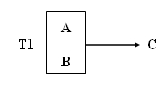
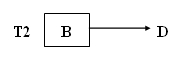
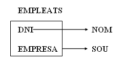
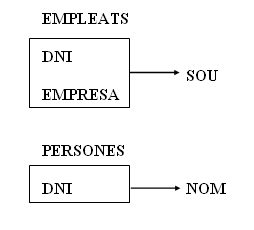

4. Segona Forma Normal (2FN)
|
Una taula es diu que està en 2FN si i només si compleix dues condicions:
|
Aquesta forma normal només es considera si la clau principal és composta, i per tant, està formada per diversos atributs.
Si una taula T té com a atributs A, B, C, D i la clau és A . B complint-se les dependències:
A . B → C
B → D
S'observa que la taula no es troba en 2FN ja que l'atribut D
no té una dependència funcional total amb la clau completa A . B , sinó amb una
part de la clau (B). El graf de les dependències funcionals seria:
Si existeix una fletxa que ix de l'interior de la caixa que engloba la clau, aleshores la taula no està en 2FN.
Posar en 2FN
Per a convertir una taula que no està en segona forma normal a 2FN, es realitza una projecció i es crea:
A) Una primera taula amb la clau i totes les seues dependències totals amb els atributs secundaris afectats:

B) Una segona taula amb la part de la clau que té dependències, i els atributs secundaris implicats:

La clau de la nova taula T2 serà l'antiga part de la clau.
Exemple: Taula amb les persones que treballen en diverses empreses amb el sou corresponent, amb els atributs:DNI , NOM , EMPRESA , SOU
Entre els atributs existeixen les dependències:
DNI → NOM
DNI . EMPRESA → SOU
El graf que mostra les dependències és el següent:

És evident que la taula no es troba en 2FN, després de normalitzar s'obté:

Llicenciat sota la Llicència Creative Commons Reconeixement NoComercial SenseObraDerivada 3.0